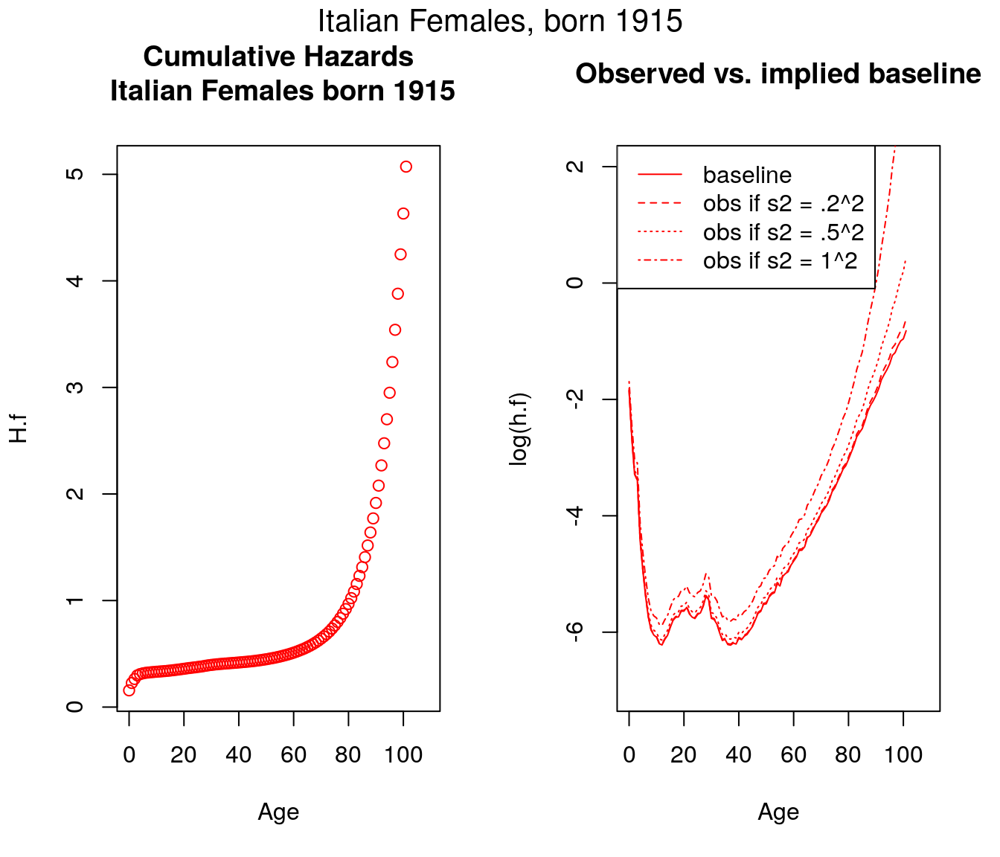
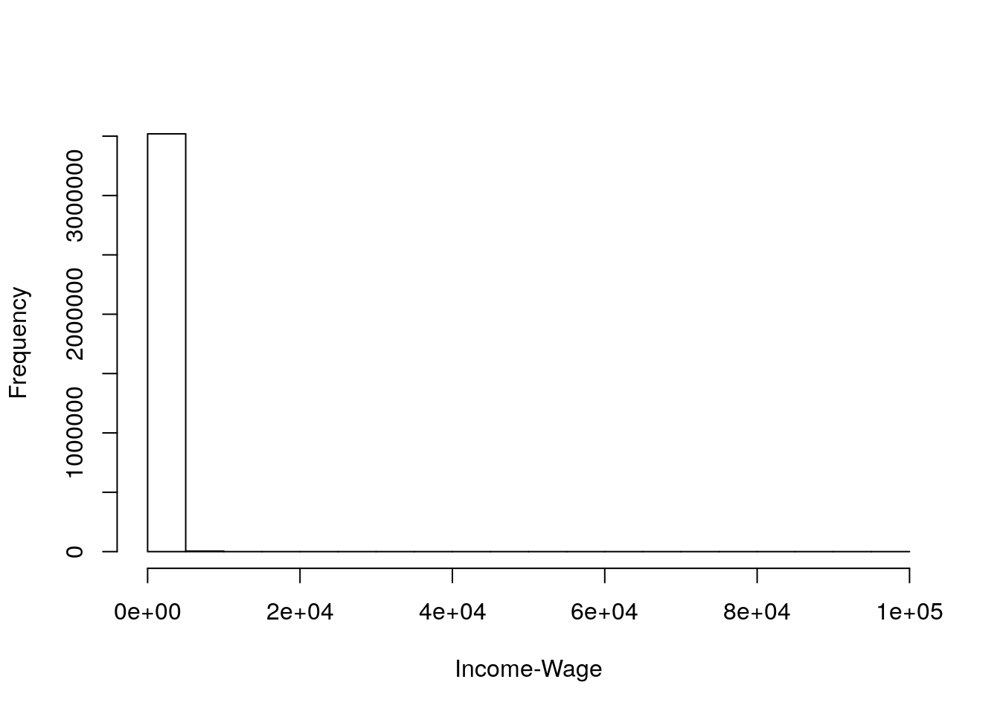

Chapter 3 Multiplicative Fixed Frailty
3.1 Outline
- Review of Mortality Mathematics
- Multiplicative-fixed-frailty and alternatives to it.
- Population Survival and Hazards under fixed frailty
- Gamma frailty
Additional resources
- Vaupel and Missov (2014):
- Rodriguez (2001): detailed hand-out for Princeton class. Many of the same results as Vaupel and Missov (2014), but with alternative derivations and notation. Also includes inversion formula and extensions beyond Gamma frailty such as “Inverse Gaussian Frailty”.
3.1.1 Review of mortality mathematics
- \(\ell(x)\) or \(S(x)\) probability of survival to age \(x\)
- \(\mu(x)\) or \(h(x)\) hazard rate at age \(x\) (“minus the exponential rate of change in survival”)
Let’s treat \(\mu\) as a definition. \[ \mu(x) \equiv -{d \over dx} \log \ell(x) \]
Can anti-differentiate (integrate) to solve for survival: \[ \ell(x) = s(x) = e^{-\int_0^x \mu(a)\, da} \]
3.1.2 Application: what is \(\ell'(x)\)?
- in words?
- taking derivative of \(\ell(x)\)
- interpretation
3.1.2.1 Two special cases
- Constant hazards \(\mu(x) = \mu\). What’s \(\ell(x)\)?
- Gompertz hazards \(\mu(x) = a e^{b x}\). What’s \(\ell(x)\)?
3.1.3 Extending Keyfitz to mortality
\[ {d \over dx} \bar{\mu}(x) = \mbox{average rate of change} - \sigma_\mu^2 \]
What is \(\bar{\mu}\)? It’s a weighted average: \[ \bar{\mu}(x) = {\int \mu(x | z) \ell(x | z) p(z) \, dz \over \int \ell(x | z) p(z) \, dz} \]
To derive Keyfitz extension, differentiate with respect to age \(x\). (See eq (13)). A good exercise.
Multiplicative Fixed frailty For individual \(i\), \[ \mu_i(x) = z_i \mu_0(x). \]
- \(z_i\) “frailty” of the \(i\)th individual. (Usually thought of as a random variable with mean \(1\).)
- \(\mu_0(x)\) “Baseline hazard” schedule. (Also, the schedule of a person with \(z = 1\)).
3.1.4 fragile
Which look like multiplicative fixed frailty? 
3.2 Part I. Results from Fixed Frailty
3.2.1 A simulation
- Our questions
- How do we do a micro-simulation, with individuals?
- How does fixed frailty fit in?
- How do we compute pop survival, hazards, etc.
- How does life table of heterogeneous pop differ from baseline?
3.2.2 Let’s derive pop survival (Note: \(\bar{s} = \bar{\ell}\))
Pop survival will be a weighted average of group survival curves
\[ \bar{s}(x) = {p(z_1) s_1(x) + p(z_2) s_2(x) + \ldots \over p(z_1) + p(z_2) + \ldots} \] With continuous \(z\) (what are limits of integration?)
\[ \bar{s}(x) = \int s(x|z) p(z) \, dz \]
Under Multiplicative Fixed Frailty use \[ \mu(x|z) = z \mu_0(x) \]
to derive
\[\bar{s}(x) = \int s_0(x)^z p(z) \,dz.\]
3.2.3 Now population hazards (stepping stones)
Definition of hazards:
\[ \bar{\mu}(x) = - {d \over dx} \log \bar{s}(x) \]
\[ \bar{\mu}(x) = \mu_0(x) {\int z s_0(x)^z p(z) \, dz \over \int s_0(x)^z p(z) \, dz} \]
\[ \bar{\mu}(x) = \mu_0(x) \bar{z}(x) \]
Let’s fill in steps.
3.2.4 Rodriguez question
Why isn’t population hazard a (simple) average of individual hazards?
Answer: selected survival means that the distribution of frailty at age \(x\) differs from the starting frailty distribution at age \(0\).
The rate of increase in hazards
(AKA “LAR: Lifetable Aging Rate”) \[ \beta(x) = {d \over dx} \log \mu(x) \]
Example:
What is \(\beta(x)\) for Gompertz: \(\mu(x) = a e^{bx}\)?
Vaupel’s result
\[ \bar{\beta}(x) = \beta_0(x) - \bar{\mu}(x) CV_z^2(x) \]
- Hazards rise less slowly in pop than in baseline
- If pop hazards plateau, then \(\bar{\beta}(x) = 0\)
- Two special cases
- Homogeneous pop and plateau in baseline
- Gompertz and constant \(CV_z\) (e.g., from Gamma)
3.3 Part II. Introduction to Gamma Frailty
3.3.1 The Gamma distribution
- What do we want in a frailty distribution?
- What’s the Gamma?
- Last math: closed form pop survival
- positive?
- a single dimension summarizing multiple factors? (Normal?)
- flexible?
- tractable?
\[ p(z | k, \lambda) = {\lambda^k \over \Gamma(k)} z^{k-1} e^{-\lambda z} \].
- \(z\) the random variable representing frailty
- \(k, \lambda\) parameters
- \(\Gamma(k)\) A normalizing constant.
3.3.2 Gamma in R
- Mean: \(k / \lambda\)
- Variance: $ k / ^2$
## [1] 0.498123## [1] 0.2915809Alternate parameterization
## with mean 1, sigma.sq
sigma.sq <- .25
z <- rgamma(10000, shape = 1/sigma.sq, rate = 1/sigma.sq)
mean(z)## [1] 1.003287## [1] 0.24685133.3.3 Population Survival of Gamma Frailty
Big picture \[ \bar{s}(x) = \int s_0(x)^z p(z) \, dz \]
Or, using our definition of survival, \[ \bar{s}(x) = \int e^{-z H_0(x)} p(z) \, dz \]
Completing the gamma \[ \bar{s}(x) = \int e^{-z H_0(x)} {\lambda^k \over \Gamma(k)} z^{k-1} e^{-\lambda z} \, dz \]
Rearranging,
\[ \bar{s}(x) = \lambda^k \int { 1 \over \Gamma(k)} z^{k-1} e^{-z (H_0(x)+\lambda)} \, dz \]
Integral is like a \(Gamma(z | k, H_0(x) + \lambda)\), but missing something. What?
Our Result
\[ \bar{S}(x) = {\lambda^k \over \left[H_0(x) + \lambda\right]^k} \]
If mean = 1.0, then we can let \(\lambda = k = 1/\sigma^2\), \[ \bar S(x) = {1/\sigma^2 \over (H_0(x) + 1/\sigma^2)^{1/ \sigma^2}} = {1 \over \left(1 + \sigma^2 H_0(x)\right)^{1/ \sigma^2}} \]
3.3.4 Interpreting Gamma-frailty survival
\[ \bar S(x) = {1 \over \left(1 + \sigma^2 H_0(x)\right)^{1/ \sigma^2}} \]
- Older ages, smaller survival.
- Variance not so clear, need a picture. (What if \(\sigma^2 = 0\)?)
x <- 0:100
a = 10^-4
b = 1/10
mx.0 <- a * exp(b*x)
Hx.0 <- cumsum(mx.0)
Sx.0 <- exp(-Hx.0)
## small sigma
sigma.sq = .5^2
bar.S.small.sigma <- 1 / (1 + sigma.sq *Hx.0)^(1/sigma.sq)
## big sigma
sigma.sq = 1^2
bar.S.big.sigma <- 1 / (1 + sigma.sq *Hx.0)^(1/sigma.sq)
plot(x, Sx.0, lty = 2, type = "l", ylim = c(0,1),
ylab = "Survival")
lines(x, bar.S.small.sigma, col = "blue")
lines(x, bar.S.big.sigma, col = "red")
legend("bottomleft", c("Pop big.sigma",
"Pop small.sigma",
"Baseline"),
lty = c(1, 1, 2),
bty = "n",
col = c("red", "blue", "black"))
title("Gamma-frailty population survival")
3.4 Conclusions
- Multiplicative Fixed Frailty is one option for modeling
- Gave us analytical expressions for population survival and hazards including \(\bar{\mu}(x) = \mu_0(x) \bar{z}(x)\)
- Extended Keyfitz result to age-changing hazards
- Survival curve for Gamma
References
Rodriguez, Germán. 2001. “Unobserved Heterogeneity.” https://data.princeton.edu/pop509/UnobservedHeterogeneity.pdf.
Vaupel, James W, and Trifon I Missov. 2014. “Unobserved Population Heterogeneity: A Review of Formal Relationships.” Demographic Research 31. JSTOR: 659–86.